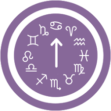
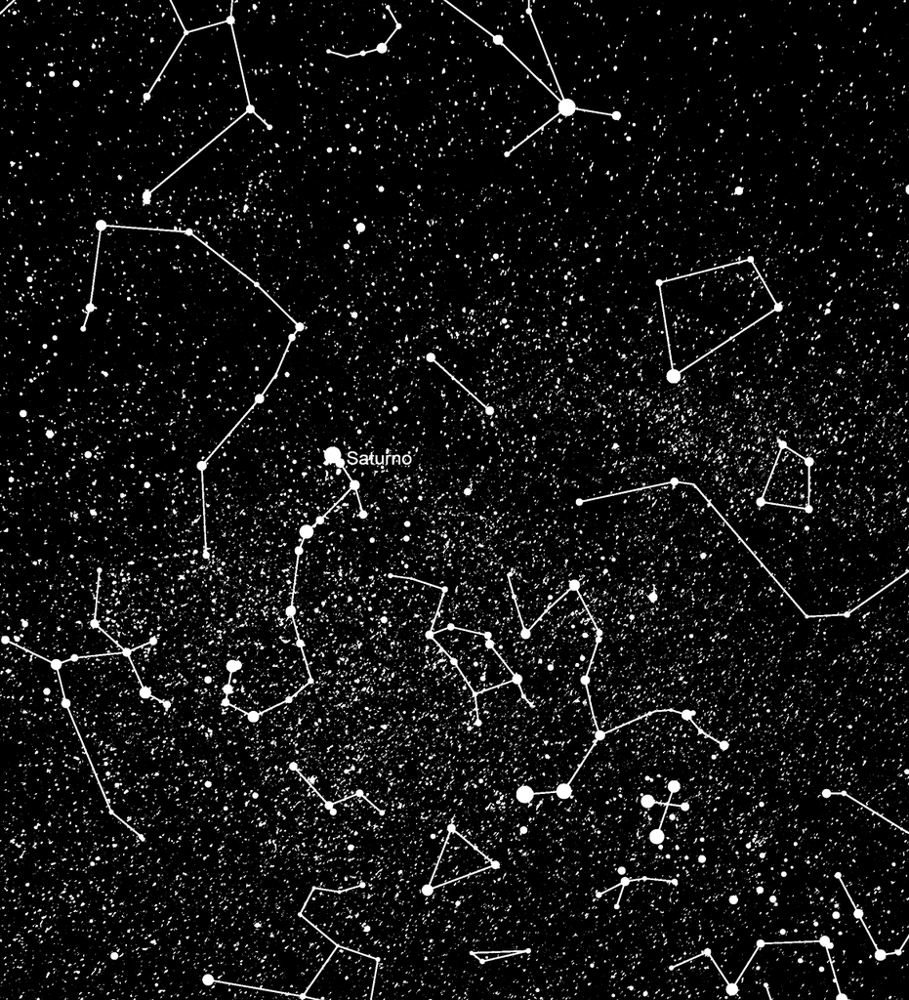

Conoce tu ascendente

El ascendente representa nuestro yo externo: cómo nos ven los otros, la primera impresión que damos y cómo nos proyectamos a los demás.
Calcula tu carta astral

La carta astral, también llamada carta natal, es un diagrama usado por los astrólogos que representa las posiciones planetarias en signos y las casas astrológicas que ocuparon en determinado lugar y tiempo en relación a la fecha de nacimiento de cada persona, con la finalidad de realizar, interpretaciones psicológicas o incluso predecir el futuro.
Crea tu propio mapa estelar
